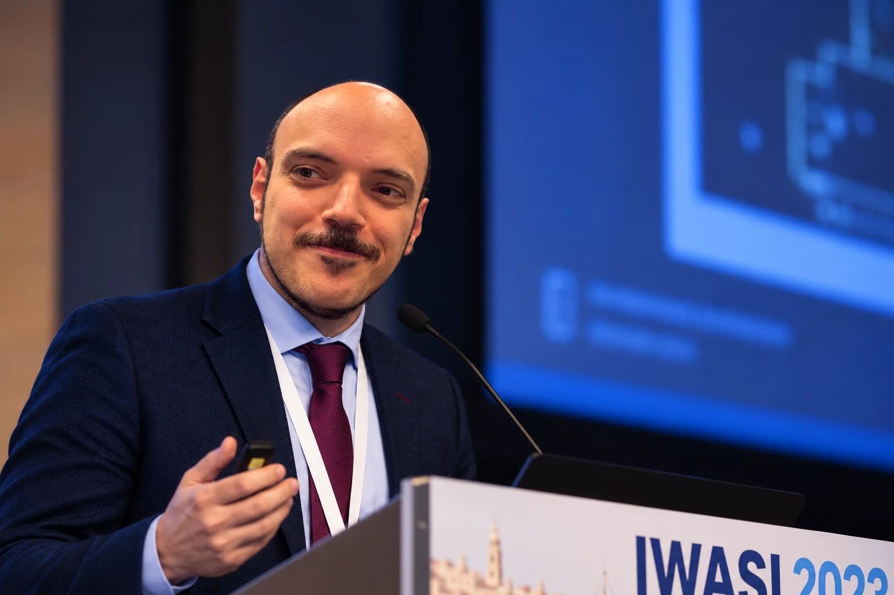

Computer engineering & research
Mario
Barbareschi
Associate Professor of Computer Engineering
Department of Electrical Engineering and Information Technology (DIETI)
University of Naples Federico II

Associate Professor of Computer Engineering
Department of Electrical Engineering and Information Technology (DIETI)
University of Naples Federico II